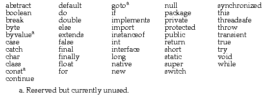
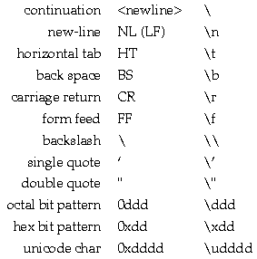

Next Prev Up Contents
2 Lexical Issues
- 2.1 - Comments
-
- 2.2 - Identifiers
-
- 2.3 - Keywords
-
- 2.4 - Literals
-
- 2.4.1 - Integer Literals
-
- 2.4.2 - Floating Point Literals
-
- 2.4.3 - Boolean Literals
-
- 2.4.4 - Character Literals
-
- 2.4.5 - String Literals
-
- 2.5 - Operators and Miscellaneous Separators
-
During compilation, the characters in Java source code are reduced to a series of tokens. The Java compiler recognizes five kinds of tokens: identifiers, keywords, literals, operators, and miscellaneous separators. Comments and white space such as blanks, tabs, line feeds, and are not tokens, but they often are used to separate tokens.
Java programs are written using the Unicode character set or some character set that is converted to Unicode before being compiled.
2.1 Comments
The Java language has three styles of comments:
- // text
- All characters from // to the end of the line are ignored.
- /* text */
- All characters from /* to */ are ignored.
- /** text */
- These comments are treated specially when they occur immediately before any declaration. They are illegal in any other place in the code. These comments indicate that the enclosed text should be included in automatically generated documentation as a description of the declared item.
2.2 Identifiers
Identifiers must start with a letter, underscore ("_"), or dollar sign ("$"); subsequent characters can also contain digits (0-9). Java uses the Unicode character set. For the purposes of determining what is a legal identifier the following are considered "letters:"
- The characters "A" through "Z"
- The characters "a" through "z"
- All Unicode characters with a character number above hex 00C0
Other characters valid after the first letter of an identifier include every character except those in the segment of Unicode reserved for special characters.
Thus, "garçon" and "Mjølner" are legal identifiers, but strings containing characters such as "xa6 " are not.
For more information on the Unicode standard, see The Unicode Standard, Worldwide Character Encoding, Version 1.0, Volumes 1&2. The FTP address for Unicode, Inc. (formerly the Unicode Consortium) is unicode.org.
2.3 Keywords
The following identifiers are reserved for use as keywords. They cannot be used in any other way.

2.4 Literals
Literals are the basic representation of any integer, floating point, boolean, character, or string value.
2.4.1 Integer Literals
Integers can be expressed in decimal (base 10), hexadecimal (base 16), or octal (base 8) format. A decimal integer literal consists of a sequence of digits (optionally suffixed as described below) without a leading 0 (zero). An integer can be expressed in octal or hexadecimal rather than decimal. A leading 0 (zero) on an integer literal means it is in octal; a leading 0x (or 0X) means hexadecimal. Hexadecimal integers can include digits (0-9) and the letters a-f and A-F. Octal integers can include only the digits 0-7.
Integer literals are of type int unless they are larger than 32-bits, in which case they are of type long (see "Integer Types" on page 9). A literal can be forced to be long by appending an L or l to its value.
The following are all legal integer literals:
2, 2L 0777 0xDeadBeef
2.4.2 Floating Point Literals
A floating point literal can have the following parts: a decimal integer, a decimal point ("."), a fraction (another decimal number), an exponent, and a type suffix. The exponent part is an e or E followed by an integer, which can be signed. A floating point literal must have at least one digit, plus either a decimal point or e (or E). Some examples of floating point literals are:
3.1415 3.1E12 .1e12 2E12
As described in "Floating Point Types" on page 9, the Java language has two floating point types: float (IEEE 754 single precision) and double (IEEE 754 double precision). You specify the type of a floating point literal as follows:
2.0d or 2.0D double
2.0f or 2.0F or 2.0 float
2.4.3 Boolean Literals
The boolean type has two literal values: true and false. See "Boolean Types" on page 10 for more information on boolean values.
A character literal is a character (or group of characters representing a single character) enclosed in single quotes. Characters have type char and are drawn from the Unicode character set (see "Character Types" on page 9). The following escape sequences allow for the representation of some non-graphic characters as well as the single quote, "`" and the backslash "\", in Java code:

A string literal is zero or more characters enclosed in double quotes. Each string literal is implemented as a String object (not as an array of characters). For example, "abc" creates an new instance of class String. The following are all legal string literals:
"" \\ the empty string
"\""
"This is a string"
"This is a \
two-line string"
2.5 Operators and Miscellaneous Separators
The following characters are used in source code as operators or separators:
+ - ! % ^ & * | ~ / > <
( ) { } [ ] ; ? : , . =
In addition, the following character combinations are used as operators:
++ -- == <= >= != << >>
>>> += - = *= /= &=|=
^= %= <<= >>= >>>= || &&
For more information see "Operators" on page 26.
Next Prev Up Contents
The Java Language Specification
Generated with CERN WebMaker